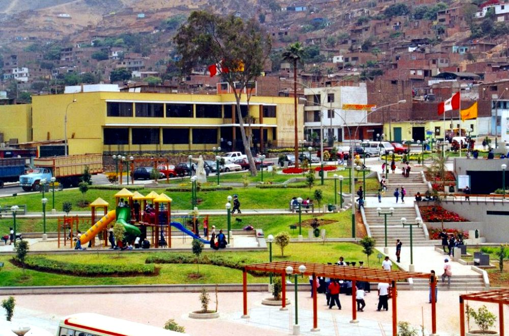

Un cevichito fresco, un buen tacu tacu o un desayuno contundente — en Nueva Esperanza, Villa María del Triunfo. También contamos con salón de eventos.
Reservas y delivery por WhatsApp Ver la cartaRestaurante y salón de eventos en la Av. 26 de Noviembre 331, Nueva Esperanza.
Ceviches, tiraditos y leche de tigre, preparados al momento con el pescado más fresco.
Arroz con pato, lomo saltado, tacu tacu y causas — la sazón criolla de siempre.
Celebra con nosotros: separa tu mesa con tiempo y vive los partidos en pantalla con el mejor ambiente.
Los platos que publicamos en nuestras redes. Consulta precios y disponibilidad por WhatsApp.
Platos tomados de las publicaciones de Santa Sazón en Facebook e Instagram. La carta y los precios pueden variar — confírmalos por WhatsApp.
Todo pasa por nuestro WhatsApp: rápido y directo.
Separa tu mesa con tiempo — las ubicaciones frente a la pantalla vuelan.
Haz tu pedido por WhatsApp al 979 303 054 y te lo llevamos.
Vive la emoción del fútbol con el mejor ambiente y pantallas listas.
Estamos en Nueva Esperanza, Villa María del Triunfo — Lima Sur.

Lima 15817 · Consulta nuestro horario y haz tu reserva por WhatsApp
Escríbenos directamente al WhatsApp o síguenos en redes para enterarte de las novedades.